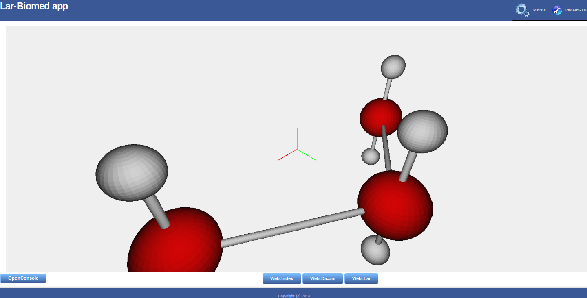
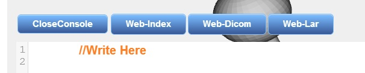
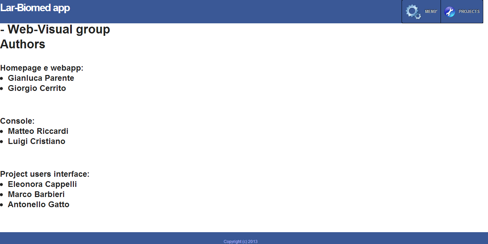
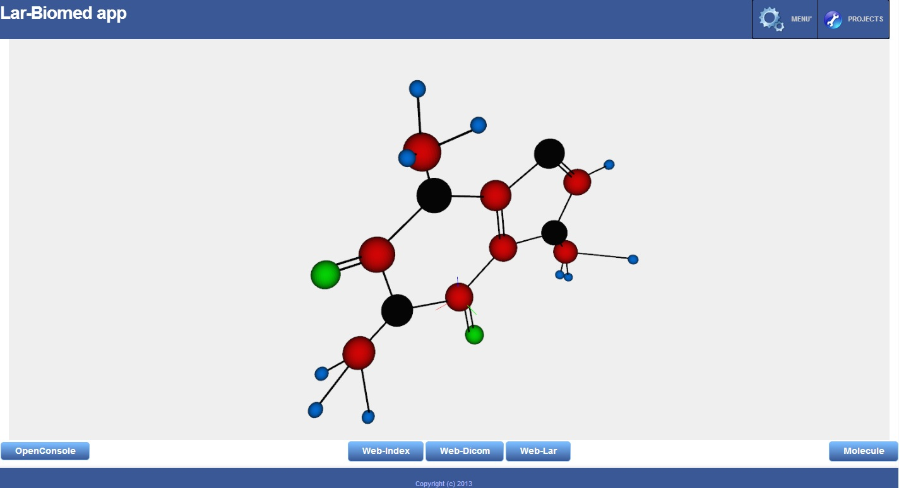

class: center, middle, inverse #Web-Visual ##Design and development of the LAR-BIOMED app --- name: inverse # Individual task ##Giorgio Cerrito and Gianluca Parente ###Tasks: ###Creation and implementation of Lar-Biomed client-side ###(integration layer with other projects) --- #Tools ###- HTML ###- CSS ###- J-QUERY ###- JAVASCRIPT (to implement function ) ###- PLASM.JS (to view point on plasm enviroment)] --- #How to... ###- create a HomePage with HTML5 and integrate all the templates with the CSS design ###- link to other projects pages ###- other graphics elements ###- About.html page ###- 3D molecule model for homepage --- ##Homepage ###(previous version molecula)  --- #Home.html ###-double Menu with colored icon in the header: first for navigation, second for other projects <img SRC="menu.jpg" WIDTH="176" HEIGHT="126" /> ###-Menu and buttons style defined in home.css ###-Plasm.js canvas integrated in context div with a 3D model of a real molecule --- ##Details ###-3D Molecule code in a .js configuration file and it auto-runs thanks to ```xml <body onLoad="showmolecole()"> ``` ###in the index.html file ###-elements sizes in percentual for visualizing correctly in all screen size ###-OpenConsole button in the bottom of canvas near 3 other projects buttons ###-CloseButton for console when it is opened  --- #Menu ###html fragment ```xml <nav> <ul id="css3menu1" class="topmenu"> <li class="topfirst"><a href="#" style="height:48px;line-height:48px;"><span> <img src="bihomed_files/css3menu1/samples2.png" alt=""/>MENU'</span></a> <ul> <li class="subfirst"><a href="#" >HOME</a></li> <li><a href="about.html">ABOUT</a></li> <li><a href="#">CONTACT</a></li> </ul> <li class="toplast"><a href="#" style="height:48px;line-height:48px;"><span> <img src="bihomed_files/css3menu1/bservice.png" alt=""/>PROJECTS</span></a> <ul> <li class="subfirst"><a id="index" href="Web-index.html">WEB-INDEX</a></li> <li><a id="dicom"href="Web-dicom.html">WEB-DICOM</a></li> <li><a id="lar" href="Web-lar.html">WEB-LAR</a></li> </ul> </ul> ``` --- #Menu ####css code ```css ul#css3menu1,ul#css3menu1 ul{ right: 0; margin:0; list-style:none; padding:0; background-color:#000; background-image:url("mainbk.png"); background-repeat:repeat; border-width:0px; border-style:solid; border-color:#162436; -moz-border-radius:4px; -webkit-border-radius:4px; border-radius:4px; } ``` --- ###About page  --- #About.html ###-same style of homepage in the about.css file ###-menus like homepage ###-the page contains the names of web-visual group students --- #Homepage ###Definitive version 